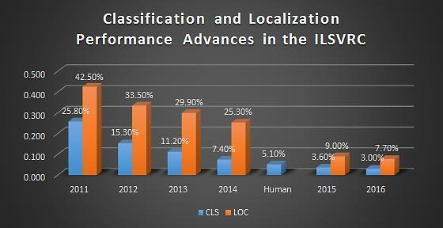

<br /><br /><br /><br />

<br /><br /><br /><br />
Let us observe how good ML has become is to see the ILSRVC results:
| Year | Team | Layers | Contribution | Position |
|---|---|---|---|---|
| 2010 | NEC | Shallow | Fast Feature Extraction, Compression, SVM | First |
| 2011 | XRCE | Shallow | High dimensional image, SVM | First |
| 2012 | SuperVision | 8 | GPU based DCNN, Dropout | First |
| 2013 | Clarifai | 8 | Deconvolution visualization | First |
| 2014 | GoogLeNet | 22 | DCNN, 1x1 conv | First |
| 2014 | VGG | 19 | All 3x3 convs | Second |
| 2015 | MSRA | 152 | Ultra Deep, Residuals | First |
| 2016 | CUImage | 269 | Ensamble, Gated Bi-Directional CNN | First |
| 2017 | Momenta | 152 | Squeeze & excitation, feature recalibration | First |
| 2018* | 264 | Direct connection between any two layers | SOA* |
As we can see networks are getting deeper and more sophisticated. Every year there is there is an addition of new technology which is making everything till then obsolete.
<br /><br /><br /><br />
<br /><br /><br /><br />
Average - 22.5/45
Mean - 20
Cut-Off - 23
<br /><br /><br /><br /><br /><br /><br /><br />

In object recognition, our aim is to recognize what all is there in the image, for e.g. Dog and Bridge. In object detection however, we need to specify where exactly the dog(s) and bridge are. Recognition is pretty easy these days, while detection is still a work in development.
<br /><br /><br /><br /><br /><br /><br /><br />
Simplify Object Detection problem by:
There are two main approaches driving detection algorithms, namely:
<br /><br /><br /><br /><br /><br /><br /><br />
We know this image:

<br /><br /><br /><br /><br /><br /><br /><br />

This is how prediction cells look like. You can relate the cells with the image.
But what is each cell looking at?
<br /><br /><br /><br /><br /><br /><br /><br />

This is from an amazing paper which came few days ago (6th March 2018) and is titles The Building Blocks of Interpretability
<br /><br /><br /><br /><br /><br /><br /><br />

Why do you think this is bad? Because we need to answer few hard questions.
Sliding Window as a concept is simple, but extremely compute intensive.
<br /><br /><br /><br /><br /><br /><br /><br />

RCNN uses this, and it was very bad, so bad that RCNN took 20 seconds to go through 1 image (it was running AlexNet 2000 times for 2000 proposals)
<br /><br /><br /><br /><br /><br /><br /><br />
Faster RCNN, SSD and YOLOv2, all use Anchor Boxes.

Intuitively, we know that objects in an image should fit certain common aspect ratios and sizes. For instance, we know that we want some rectangular boxes that resemble the shapes of humans. Likewise, we know we won’t see many boxes that are very very thin. In such a way, we create k such common aspect ratios we call anchor boxes. For each such anchor box, we output one bounding box and score per position in the image.
<br /><br /><br /><br /><br /><br /><br /><br />
Let us see how to do it!

Compute different number of clusters and compute the mean of maximum IOU between bounding boxes and individual anchors.
Plot centroids vs mean IOU.

Pick the top 5 anchor boxes (5 for YOLOv2 where IOU was above 65%)

<br /><br /><br /><br /><br /><br /><br /><br />

Intersection over Union is an evaluation metric used to measure the accuracy of an object detector on a particular dataset.
<br /><br /><br /><br /><br /><br /><br /><br />

We have 5 anchor boxes. For each anchor box we need Objectness-Confidence Score (where there is an object found?), 4 Coordinates ( and ), and 20 top classes. This can crudely be seen as 20 coordinates, 5 confidence scores, and 100 class probabilities as shown in the image on the right, so in total 125 filter of 1x1 size would be needed.
So we have few things to worry about:
All losses are mean squared errors, except classification loss, which uses cross entropy function.
<br /><br /><br /><br /><br /><br /><br /><br />

Now, let's break the code in the image.
We need to compute losses for each Anchor Box (5 in total)
We need to do this for each of the 13x13 cells where S = 13
Check out this table:
| var1 | var2 | (var1-var2)^2 | (sqrtvar1-sqrtvar2)^2 |
|---|---|---|---|
| 0.0300 | 0.020 | 9.99e-05 | 0.001 |
| 0.0330 | 0.022 | 0.00012 | 0.0011 |
| 0.0693 | 0.046 | 0.000533 | 0.00233 |
| 0.2148 | 0.143 | 0.00512 | 0.00723 |
| 0.8808 | 0.587 | 0.0862 | 0.0296 |
| 4.4920 | 2.994 | 2.2421 | 0.1512 |
<br /><br /><br /><br /><br /><br /><br /><br />
>
<br /><br /><br /><br /><br /><br /><br /><br />
>
> YOLOv2 vs Others
<br /><br /><br /><br /><br /><br /><br /><br />
>
> Non Maximum Separation
<br /><br /><br /><br /><br /><br /><br /><br />
class as well as objectness for every anchor box.<br /><br /><br /><br /><br /><br /><br /><br />

<br /><br /><br /><br /><br /><br /><br /><br />
keras-yolo2/Yolo Step-by-Step.ipynb at master · experiencor/keras-yolo2 · GitHub
Implement the above code and infer this image:

Open the Assignment 5 excel sheet in Google Drive folder, add your name, email address and Google Colab File link (make sure share settings are proper)
Deadline 11th May 11:30PM